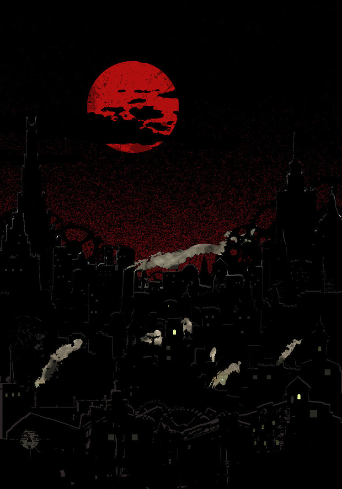
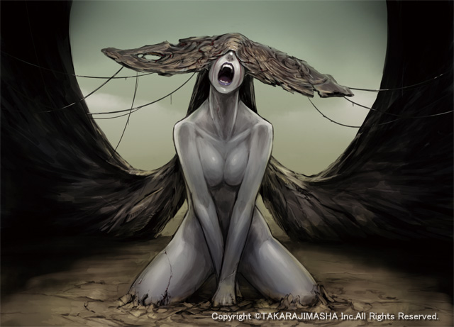
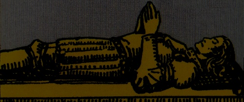

|
Descenso al Inframundo
Autor : yemeth |
"El Eros del hombre no solo lo dirige hacia arriba,
sino también hacia abajo, hacia ese asombroso y oscuro mundo de Hécate y Kali”
Carl Jung

Descenso al Inframundo
Como parte de un largo trabajo con los Túneles de Set, llegó el momento de explorar aquel que llaman “Malkunofat”. Y pronto a mi alrededor todo apuntaba hacia la necesidad de un descenso al Inframundo, centrándose en el relato sumerio de Inanna, quien aprende allí los secretos de la muerte de su hermana Ereshkigal.
Investigué y averigué todo lo posible acerca de esta aventura que prometía reconciliar Eros y Thanatos, aún sin tener muy claro dónde me llevaría.
Inanna desciende vestida con todas sus galas de vida, y decide internarse en Irkalla para visitar a su hermana, que reina en el Inframundo. En la tierra del no retorno, es donde acaban las cosas que deben pudrirse, para dar lugar a nueva vida. Y en la ciudad hay siete puertas que Inanna tiene que atravesar, y en cada puerta un guardián le pide que se desprenda de algo. Se tratará de ropas y abalorios, símbolos de lo que ella es, que tendrá que entregar hasta quedar desnuda e indefensa.
Es entonces cuando su hermana Ereshkigal la mata y la cuelga de un gancho, como un trozo de carne podrida (en Sumeria no se andaban con delicadezas). Su compañera Ninshubur solicita a los dioses que no dejen que Inanna quede muerta en el Inframundo, y no encuentra mucho entusiasmo hasta que al fin Enki crea a dos sirvientes que compartirán el duelo de Ereshkigal, consiguiendo que esta a cambio de la compañía les entregue el cuerpo de Inanna para ser finalmente resucitado mediante el “agua de la vida”.
Ritual de descenso
Tras una larga planificación, llevé a cabo un ritual del descenso al Inframundo en el que interpretaría el papel de Inanna. Todo ello se vería fortalecido por el consumo de psilocybe cubensis, para que resultara en la apertura de una verdadera brecha.
Así una mañana, tras una apertura preliminar del espacio ritual y un destierro, comenzó el teatro. Allí el barquero que atraviesa el río que me separaba de mi destino me entregó la sustancia que me permitiría viajar por aquellas tierras.
En cada una de las puertas fui dejando cosas a las que estaba apegado, y de hecho como parte de la experiencia del túnel de Malkunofat, hacía muy poco que la afilada hoja de Kali había cortado una parte esencial de mi propia vida, rompiendo mis convicciones sobre mi vida futura y cambiando mi rumbo por completo. Allá se quedaron mis abalorios y prendas más simbólicas, el precio para ser recibido por mi hermana. Mi mundo tenía que quedarse fuera.
Pero no hubiera bastado con esto. Inanna es luz, y más de una persona y sincronicidad se encargó de insistir mucho en aquello en los días anteriores al ritual. Debía encarnarla. Era importante, amor y entusiasmo. Así que a medida que descendí en la sombra, donde todo cuanto me rodeaba era dolor y oscuridad, insistí con fuerza en ser luz y pasión por la vida. Tenía que ser Inanna, con su llama encendida. Aunque nunca hubiera encontrado antes tinieblas tan opresivas.
Y allí estaba ella. Mi hermana. Se deslizaba como una serpiente. Me rodeaba, giraba a mi alrededor, como si me acechara.
Yo caía, caía una y otra vez ante lo terrible que me envolvía. Pero también me levantaba cada vez, pensaba “soy Inanna” y me llenaba de esa pasión vital y luz y amor. Has de ser lo opuesto, la energía que se necesita como opuesto.
Y entonces sucedió. Algo se destruyó, y ya no había Inanna ni Ereshkigal, y parecía como si hubiera sido catapultado fuera de mi mente. Esa mente la vi representada como un salón lleno de gente, hablando todos a la vez y diciendo cada uno una cosa distinta. Tuve que hacerles callar.

“Si estás atravesando el infierno, sigue adelante”
Winston Churchill
Silencio
Cuando al fin desaparecieron las voces, sentí como si sacara la cabeza del agua. Frente a mí estaba aquel espejo hecho de agua, y ese agua era mi mente, y por fin había quedado en calma y sin vibraciones, sin esas vibraciones que tomaban formas contra el silencio, y que ahora que habían desaparecido me dejaban ver más allá de su juego.
Las vibraciones se habían detenido, pero la quietud no solo pertenecía a las aguas. En la habitación había una absoluta ausencia de sonido. Y yo miraba el espejo entendiendo que todo lo que hasta ahora había llamado vida transcurría allí dentro. Todas las personas que había conocido, todas las experiencias que había tenido, todo había sucedido en esas aguas en las que hasta aquel momento siempre había tenido sumergida la cabeza.
Sentía como si hubiera separado mi facultad consciente y mi mente. Percibía las cosas de una manera intuitiva, formando imágenes en la consciencia, y mientras tanto la mente estaba allí en aquel agua, y al quedar en calma me había dejado salir y experimentar esta parte de mí que es la consciencia como algo separado, disociado de la mente junto a la que uno la experimenta habitualmente, tanto que acaba por mezclarlas y considerarlas una sola cosa.
Me encontraba en la antesala de la muerte. Y en ese momento no sería tan consciente como a mi regreso. Pues al igual que sucede en el mito, mi hermana había extinguido mi vida, para que yo pudiera aprender los secretos de la muerte.
En la habitación había también una estatua de un gran guardián de piedra. Y una puerta. Y me pregunté qué habría detrás de ella, pero mi atención la acaparaba el espejo. Y encontré que amor y pasión me llevaban hacia dentro del espejo, mientras que muerte me sacaba. Entré y salí varias veces, hasta que entendí que ambos Eros y Thanatos eran sentidos opuestos de un mismo movimiento. Eros te metía en el espejo y te permitía volver a experimentar lo que había dentro, Thanatos te sacaba del espejo y te dejaba en aquella sala. Los dos la misma cosa, y ninguno mejor que otro, no eran más que un desplazamiento, hacia fuera o hacia dentro de la vida que conocía.
Y regresé aquí, con la idea metida en la cabeza de que una actuación ética tenía que facilitar volver allá. Y también compensar cada energía con su opuesta, enfrentar así cada onda con la que la anule en “interferencia destructiva”, cresta contra valle, detener así las vibraciones para volver y seguir explorando ese lugar antes de que mi vehículo material desaparezca y no tenga más remedio que ir allá.
Viaje hacia la muerte que ya no me preocupaba gran cosa, porque ese silencio era extremadamente agradable. Podría enamorarme de él muy fácilmente.
De vuelta a la realidad en la que dejo escritas estas huellas, me costó un poco readaptarme.
Las cosas me resultaban extrañas. Los aparatos tecnológicos más todavía. Y las palabras. Sobre todo las palabras. Podía pronunciarlas, pero se me hacían raras, ajenas. Se me repetía una palabra infantil en la cabeza, “guagua”, y la repetía como un niño que estuviera descubriendo por vez primera su propia habilidad para el lenguaje encontrando en las palabras algo con lo que jugar.
Había pasado tan poco tiempo en aquel otro lugar, y ya había empezado a olvidarme de todo esto.

Conclusión
Por supuesto, uno debe tomar con escepticismo toda visión, y más en un caso como este. Quedará trabajo pendiente para comprobar la consistencia del sendero y del destino, y siempre conservo la sospecha de que por muchos estados visionarios que uno encuentre, la muerte no dejará al completo de ser un misterio hasta que uno deje de existir aquí. Sobre todo esto no puedo más que decir honestamente, no lo sé, y no quiero adoptar creencia alguna.
Sin embargo, aún si tomo con cautela las visiones sobre la antesala de la muerte, sí me parece importante y al mismo tiempo menos cuestionable la separación experimentada entre la consciencia (el escenario donde se produce la representación en forma de ‘qualia’) por un lado, y por otro la mente que procesa las percepciones y alimenta con ello a esa consciencia.
El recopilado de los datos de la percepción y su proceso pueden explicarse en términos de estructuras físicas, pero a nuestra ciencia le falta aún dilucidar el paso al ‘qualia’. ¿Cómo se convierte la codificación química de una determinada longitud de onda electromagnética en nuestra experiencia del color?. Aquí hay un paso que actualmente se nos escapa, y que no podemos simplemente ignorar considerando la consciencia como un ‘epifenómeno de sistemas físicos complejos’ (¿no es acaso la materia también un epifenómeno de otra cosa, si atendemos a la física moderna?).
Una de las cosas que me han resultado más interesantes en esta experiencia, ha sido la posibilidad de separar de manera tan clara mi consciencia de mi mente. Independientemente de la validez de la visión de aquella habitación como “antesala de la muerte” (visión que en todo caso sería intuitiva, dudo mucho que aún de ser cierta otro la percibiera con los mismos símbolos -espejo, puerta, guardián-), lo que sí que puedo asegurar que sucedió fue que mi mente estaba fuera de mí. Que yo me había desidentificado de ella, sustrayéndose mi consciencia a su embrujo como cabeza que saliera del agua y se diera cuenta de que no formaba parte de ella.
Que hay muchas vestiduras que uno confunde consigo mismo.
Imágenes:
[1] Dark City / Kult by ~Infernallo
[2] Ereshkigal by ~kometani
[3] Rider-Waite tarot
|
|

|  RSS
RSS